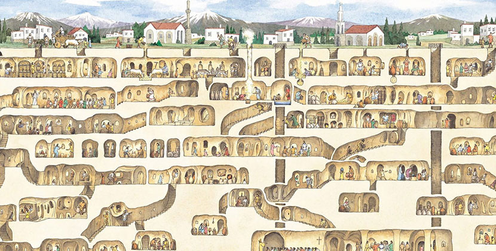

| Cappadocia | Locations | Food | Facts |
|---|
Cappadocia is located in eastern Anatolia, in the heart of Turkey. The Cappadocia region combines nature and history. People carved dwellings and churches inside fairy chimneys generated by geological phenomena.The region is currently quite important in terms of tourism.
Cappadocia's surreal landscapes are well-known for its distinctive rock formations and incredible hot air ballooning experiences, making them one of Turkey's most visited natural attractions.
`
The region was under Persian authority after the 6th century BCE until Alexander the Great and his successors took control in the 3rd century BCE. Cappadocia became a Roman province in 17 AD, and Christian legacy flourished once Christianity became the official religion of the Roman Empire. The number and extent of underground settlements increased during the Arab invasions of Cappadocia between the 7th and 10th centuries AD. The Turkish occupation ultimately brought peace to Cappadocia, as seen by the magnificent churches cut into the volcanic rocks. Almost all of Cappadocia's frescoes come from the 11th and 12th centuries.(Summurized by Kadir Akın,From Turkey is Your Organizer Blog). There are tours of Cappadocia's underground city available; click on this link to learn more.
Going to Turkey, especially Cappadocia, has been a dream of mine since middle school, when I began learning the Turkish language and becoming involved in the culture. I did a lot of research and watched a lot of documentaries, videos, and television shows about the various cities in Turkey. I always go to Turkish restaurants and try various types of food. I am a big fan of the culture, and it never ceases to amaze me how beautiful the country is. I considered moving there after graduation because I know the language and have many friends who are Turkish. Cappadocia feels like it belongs in a movie, and it is number one on my bucket list. I can't wait to visit this magical city.